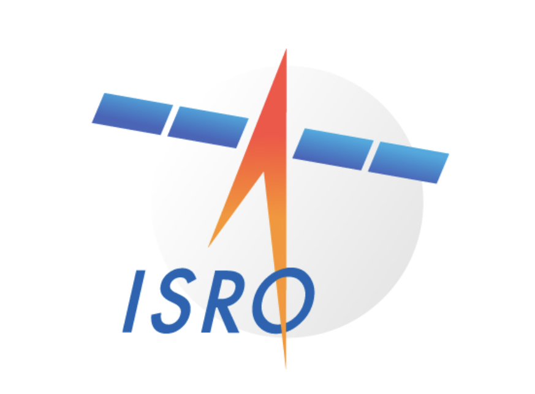

NASA Tuits 
@nasatuits . May 5
...
The National Aeronautics and Space Administration is an independent agency of the U.S. federal government responsible for the civil space program, aeronautics research, and space research.
spacenasa.us
NASA's first administrator was Dr.T. Keith Glennan who was appointed by President...
To focus U.S. technological research, Congress and the President create a new federal agency. The creation of NASA following Soviet Union's 1957 launch of Sputnik?Any Yes...

ISRO Tuits
@isro.gov.tuits . Apr 7
...
ISRO is the national space agency of India for the purpose of all space-based applications like reconnaissance, communications and doing research. https://www.isro.gov.in/
gov.isro.in
APJ Abdul Kalam: Remembering India's missile man APJ Abdul ...In 1969, Kalam...
APJ Abdul Kalam was appointed as the project director in ISRO and his leadership made it feasible for the country to construct own SLV from ground zero. In July 1980, the SLV III...